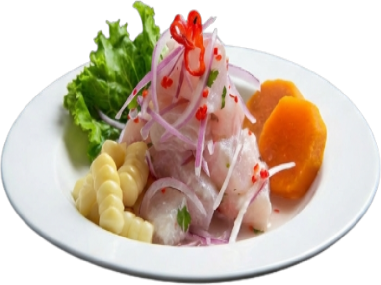
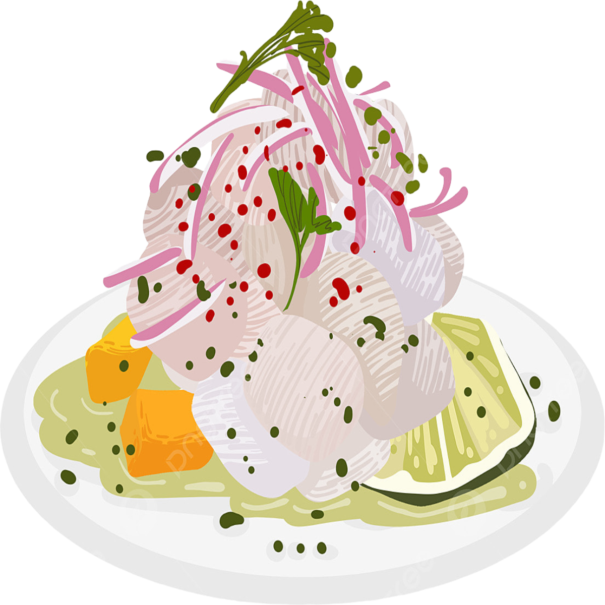

Ceviche Peruano
Sabor fresco del mar
Descubre la receta auténtica del ceviche peruano, el plato que conquista con su mezcla perfecta de frescura, sabor y tradición.
Ver Receta

Una tradición milenaria
El ceviche es un plato tradicional peruano con más de 2,000 años de historia. Originario de la costa peruana, combina pescado fresco marinado en jugo de limón, cebolla morada, ají limo y cilantro. En 2024, el ceviche fue declarado Patrimonio Cultural Inmaterial del Perú, consolidando su lugar como símbolo de la gastronomía nacional.
Patrimonio Cultural
Declarado Patrimonio Cultural Inmaterial del Perú
Famoso Mundialmente
Uno de los platos más reconocidos de Latinoamérica
Cómo preparar tu Ceviche
Cortar el pescado
Corta el pescado en cubos de aproximadamente 2 cm. Asegúrate de que esté muy fresco y limpio.
Sazonar con sal y ají
Coloca el pescado en un bowl, añade sal y el ají limo picado. Mezcla suavemente.
Añadir el limón
Exprime los limones directamente sobre el pescado. El ácido del limón "cocina" el pescado.
Agregar cebolla y cilantro
Añade la cebolla morada en juliana y el cilantro picado. Mezcla con cuidado.
Reposar
Deja reposar entre 10-15 minutos. El pescado adquirirá una textura firme y blanca.
Servir
Sirve con camote sancochado, choclo fresco,cancha serrana y una deliciosa salsa de ají.
Tiempo y Porciones
Preparación
20 minutos
Total
30 minutos
Porciones
4 personas
Galería Culinaria

El Plato Perfecto
Presentación clásica del ceviche peruano con todos sus acompañamientos.

Ingredientes Frescos
La clave está en la calidad del pescado y la frescura de los limones.
¿Listo para preparar tu Ceviche?
Ahora tienes todos los secretos para preparar el ceviche peruano más auténtico. ¡Anímate a cocinar y comparte con tu familia!
¡A Cocinar!